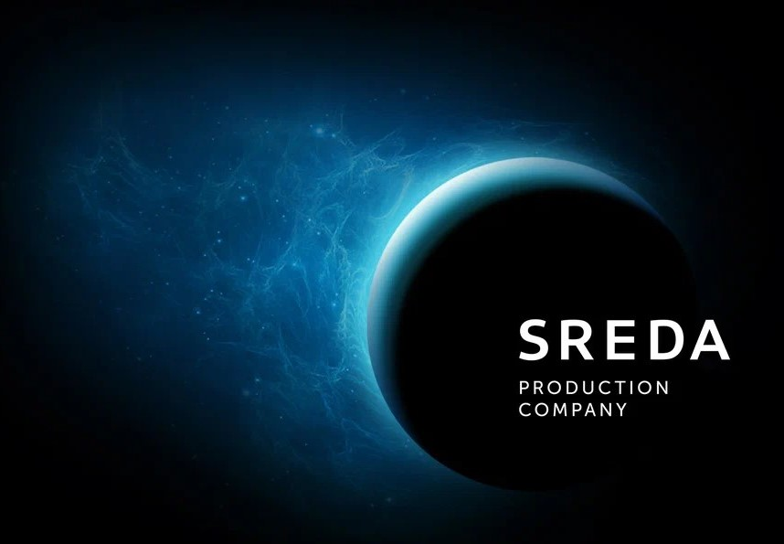

Главная
«Среда» — продюсерская компания, производитель телепрограмм и сериалов для федеральных каналов и онлайн-платформ.
Основана в июне 2008 года Александром Цекало после его ухода с поста заместителя генерального директора по спецпроектам «Первого канала».
Основной вид деятельности: производитель теле- и кинопродукции, дистрибьютор.
До 31 марта 2014 года совладельцем компании выступал продюсер Руслан Сорокин. С 2017 года генеральным продюсером и управляющим партнёром компании является Иван Самохвалов.
